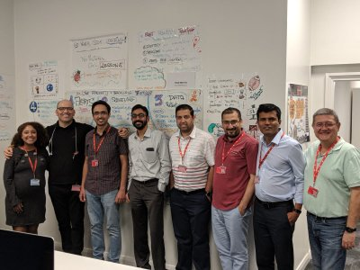
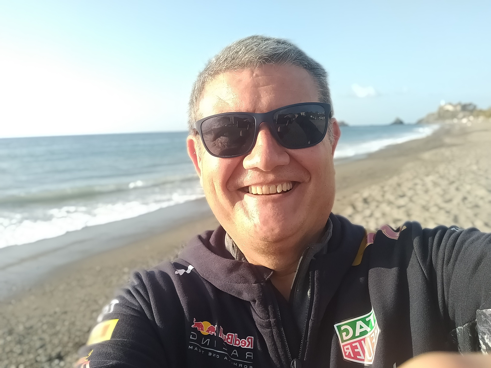

Stunning Sunset
Sunset in my hometown a wonderful place on the Tropical Coast of southern Europe

A talented team
I really enjoyed the time we spent together developing microservices in Java Spring Boot framework in this Squad full of talented engineers.
I will always carry you in my heart
I will always carry you in my heart

Enjoying a walk by the sea
I have a calm and relaxed personality and I enjoy long walks in nature.
Another of my great passions is reading and learning something new every day.
Another of my great passions is reading and learning something new every day.